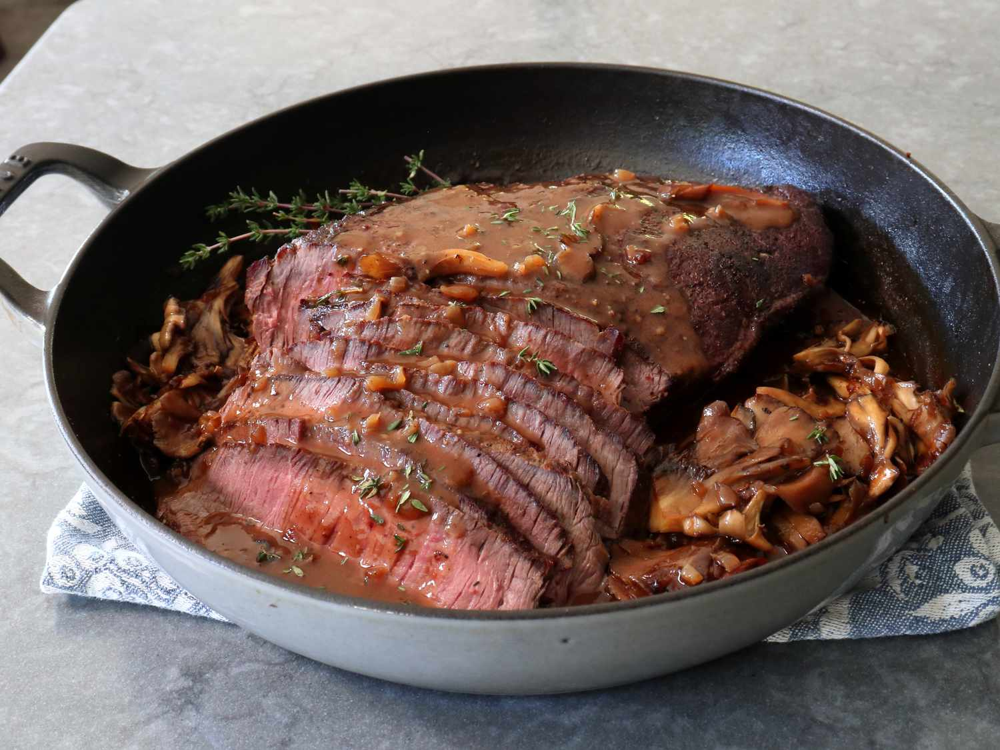

Roast Beef and Pan Gravy

Description
This roast beef and pan gravy turns the toughest cuts of beef into an appetizing and tender meat seasoned with a light muschroom pan gravy.
Ingredients
For Dry Brine:
- 3・1/2 to 4 teaspoons kosher salt (use 1 teaspoon per pound of beef)
- 1 teaspoon ground black pepper
- 1 teaspoon granulated garlic
- 3・1/2 to 4 pounds top round beef roast (sometimes sold as "London Broil")
For Roast and Pan Gravy
- 1 tablespoon vegetable oil
- 1 yellow onion, diced
- 3 cups torn miatake (hen-of-the-woods) mushrooms, or any mushrooms
- 1/2 teaspoon kosher salt
- 2 tablespoons melted butter
- 1 tablespoon cold butter
- 1 tablespoon all-purpose flour
- 2 tablespoons of any wine vinegar
- 2 cups high quality, low-sodium beef broth
- Salt and freshly ground black pepper to taste
- 1 pinch cayenne pepper, or to taste
- 1 teaspoon freshly picked thyme leaves
Directions
- Combine 1 teaspoon salt per pound of beef, 1 teaspoon black pepper, and granulated garlic in a small bowl and mix well.
Set the beef on a piece of butcher paper, and apply half of salt mixture evenly to each side, tamping it on lightly with a fork. Press the sides of the roast onto any seasoning that has fallen onto the paper. Place beef on a wire rack set over a pan. Refrigerate the “dry brined” beef, uncovered, for 24 hours, turning meat over once after 12 hours.
- Preheat the oven to 475 degrees F (245 degrees C).
- Heat oil in an oven-safe pan or skillet over high heat; add beef to pan and sear on both sides until nicely browned (~3 minutes per side).Sear on the sides if desired
- Turn off heat, add onions to the pan and top with mushrooms. Season vegetables with the 1/2 teaspoon salt. Drizzle melted butter over vegetables, and brush melted butter over beef.
- Roast in the preheated oven for 15 minutes.
- Reduce oven temperature to 325 degrees F (170 degrees C), and continue to roast beef until desired internal temperature is reached. Begin to check temperature after 15 to 20 minutes.
- Transfer beef to a plate, and cover loosely with foil. Let it rest at least 15 to 20 minutes before slicing.
- Remove mushrooms from pan and keep warm until ready to serve
- Melt 1 tablespoon cold butter in the pan over medium-high heat; sprinkle in flour, and cook, stirring, for 2 minutes. Whisk in vinegar and beef broth, and bring mixture to a boil, stirring occasionally. Season with salt, black pepper, and cayenne to taste, and add thyme leaves.
- Continue boiling on medium-high heat until gravy reduces by about half and thickens slightly. Gravy can be reduced more for a thicker texture.
- Once meat is rested, slice thinly at a 45-degree angle, and serve with mushrooms and hot gravy over the top.